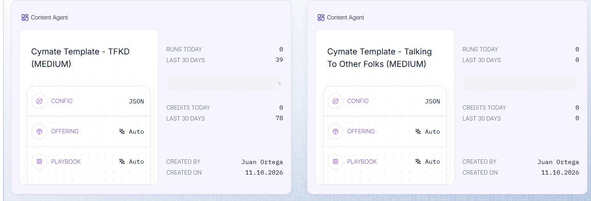

<title>Copy Studio Walkthrough</title>
<meta name="claude:viewport-fit-sides" content="cover">
<link rel="preconnect" href="https://fonts.googleapis.com">
<link rel="stylesheet" href="https://fonts.googleapis.com/css2?family=Inter:wght@400;500;600&family=JetBrains+Mono:wght@400;500&family=Space+Grotesk:wght@500;600&display=swap">
<style>
/* Layout: a single reading column for a screen-recorded walkthrough: thesis, the flow, Octave, the agents, the frameworks, how we pick, personalization, then the hand-off to the live Copy Studio. Same palette as the Studio so the two tabs feel like one product. */
:root{
  --bg:#F3F5F6; --panel:#FFFFFF; --sunk:#EAEEF0; --ink:#15212A; --muted:#5A6873; --line:#D9E0E4;
  --accent:#0E6B70; --accent-ink:#FFFFFF; --accent-soft:#DCEFEF;
  --short:#9A6411; --medium:#0E6B70; --long:#2D7A4C;
  --f-display:"Space Grotesk",ui-sans-serif,system-ui,sans-serif;
  --f-body:"Inter",ui-sans-serif,system-ui,-apple-system,"Segoe UI",sans-serif;
  --f-mono:"JetBrains Mono",ui-monospace,"Cascadia Mono",Consolas,monospace;
}
@media (prefers-color-scheme: dark){:root:not([data-theme="light"]){
  --bg:#0F1519; --panel:#161E23; --sunk:#1C262C; --ink:#E4EBEE; --muted:#93A3AD; --line:#2A363D;
  --accent:#4DB6BB; --accent-ink:#0B1A1C; --accent-soft:#183539; --short:#E0AE57; --medium:#4DB6BB; --long:#6CC793; color-scheme:dark}}
:root[data-theme="dark"]{
  --bg:#0F1519; --panel:#161E23; --sunk:#1C262C; --ink:#E4EBEE; --muted:#93A3AD; --line:#2A363D;
  --accent:#4DB6BB; --accent-ink:#0B1A1C; --accent-soft:#183539; --short:#E0AE57; --medium:#4DB6BB; --long:#6CC793; color-scheme:dark}
*{box-sizing:border-box}
body{background:var(--bg);color:var(--ink);font:15px/1.65 var(--f-body);padding-left:max(16px,env(safe-area-inset-left,0px));padding-right:max(16px,env(safe-area-inset-right,0px));padding-block:0 64px}
main{max-width:920px;margin:0 auto;display:flex;flex-direction:column;gap:44px}
h1,h2,h3{font-family:var(--f-display);font-weight:600;margin:0;text-wrap:balance;letter-spacing:-.01em}
h1{font-size:clamp(28px,4.6vw,42px);line-height:1.12}
h2{font-size:23px;margin-bottom:10px}
h3{font-size:16px}
p{margin:0;max-width:68ch}
a{color:var(--accent)}
code,.mono{font-family:var(--f-mono);font-size:.86em}
.eyebrow{font-family:var(--f-mono);font-size:11.5px;letter-spacing:.08em;text-transform:uppercase;color:var(--accent)}
.lede{font-size:18px;color:var(--muted);max-width:62ch}
.stack{display:flex;flex-direction:column;gap:12px}
.hero{padding-top:40px;display:flex;flex-direction:column;gap:16px}
.cta{display:inline-flex;align-items:center;gap:8px;background:var(--accent);color:var(--accent-ink);text-decoration:none;font-weight:600;padding:10px 16px;border-radius:8px;width:fit-content}
.cta:focus-visible{outline:2px solid var(--ink);outline-offset:2px}
.panel{background:var(--panel);border:1px solid var(--line);border-radius:10px;padding:18px}
.flow{list-style:none;margin:0;padding:0;display:grid;grid-template-columns:minmax(0,1fr);gap:0;counter-reset:s}
.flow li{display:grid;grid-template-columns:44px minmax(0,1fr);gap:12px;padding:12px 0;border-bottom:1px solid var(--line)}
.flow li:last-child{border-bottom:none}
.flow li::before{counter-increment:s;content:counter(s);font-family:var(--f-mono);font-weight:500;width:30px;height:30px;border-radius:50%;border:1.5px solid var(--accent);color:var(--accent);display:grid;place-items:center;font-size:13px}
.flow b{display:block}
.flow span{color:var(--muted)}
.who{font-family:var(--f-mono);font-size:11px;letter-spacing:.05em;text-transform:uppercase;color:var(--muted);margin-left:6px}
.points{display:grid;grid-template-columns:repeat(auto-fit,minmax(min(100%,260px),1fr));gap:12px}
.points .panel p{color:var(--muted);font-size:14px;margin-top:4px}
figure{margin:0;display:flex;flex-direction:column;gap:8px}
figure img{border-radius:10px;border:1px solid var(--line);display:block;width:100%;height:auto}
figcaption{font-size:13px;color:var(--muted)}
.agents{list-style:none;margin:0;padding:0;display:flex;flex-direction:column;border:1px solid var(--line);border-radius:10px;background:var(--panel)}
.agents li{display:flex;gap:10px;align-items:center;flex-wrap:wrap;padding:11px 14px;border-bottom:1px solid var(--line)}
.agents li:last-child{border-bottom:none}
.agents a{font-weight:500}
.agents .mono{color:var(--muted);margin-left:auto}
.len{font-family:var(--f-mono);font-size:11px;font-weight:500;letter-spacing:.06em;padding:0 7px;line-height:20px;border-radius:4px;color:var(--bg);white-space:nowrap}
.len.s{background:var(--short)}.len.m{background:var(--medium)}.len.l{background:var(--long)}
.fws{display:grid;grid-template-columns:repeat(auto-fit,minmax(min(100%,280px),1fr));gap:12px}
.fw{display:flex;flex-direction:column;gap:8px}
.fw .top{display:flex;gap:8px;align-items:center;flex-wrap:wrap}
.fw .words{margin-left:auto;font-family:var(--f-mono);font-size:12px;color:var(--muted);font-variant-numeric:tabular-nums}
.fw ol{margin:0;padding-left:18px;font-size:13.5px}
.fw ol li{margin:2px 0}
.fw .when{font-size:13.5px;border-top:1px solid var(--line);padding-top:8px;color:var(--muted)}
.fw .when b{color:var(--ink);font-weight:500}
.rules{margin:0;padding-left:20px;display:flex;flex-direction:column;gap:6px}
.pair{display:flex;gap:10px;align-items:center;flex-wrap:wrap;font-family:var(--f-display);font-size:18px}
.vs{color:var(--muted);font-size:14px;font-family:var(--f-body)}
.compare{display:grid;grid-template-columns:repeat(auto-fit,minmax(min(100%,300px),1fr));gap:12px}
.compare .panel{display:flex;flex-direction:column;gap:6px}
.compare .bad{color:var(--muted)}
.ex{font-size:14px;background:var(--sunk);border-radius:8px;padding:10px 12px}
.studio{display:grid;grid-template-columns:repeat(auto-fit,minmax(min(100%,250px),1fr));gap:10px}
.studio div{border-left:2px solid var(--accent);padding:2px 0 2px 12px}
.studio b{display:block;font-size:14px}
.studio span{font-size:13.5px;color:var(--muted)}
.note{font-size:13.5px;color:var(--muted)}
</style>

<main>
  <header class="hero">
    <span class="eyebrow">Cymate · stage 3 · copy</span>
    <h1>How Copy Studio writes cold email with Octave</h1>
    <p class="lede">You give it a client and the campaign you want to run. It reads what Octave and Smartlead already know, picks a short and a medium framework and explains why, and writes the full emails, built for an A/B test. Then you iterate until the copy is right.</p>
    <a class="cta" href="https://claude.ai/artifact/KVyCUJDx1ZfaPB156dmTTX" target="_blank" rel="noopener">Open Copy Studio</a>
  </header>

  <section class="stack">
    <h2>What happens when you press Build</h2>
    <ol class="flow panel">
      <li><div><b>You write the brief <span class="who">CSM</span></b><span>The client's name and the campaign in plain words: who, what offer, the goal, any proof to use. That is the only input.</span></div></li>
      <li><div><b>It reads the client's Octave workspace <span class="who">Octave</span></b><span>Company, products, personas, segments, use cases and proof points: the client's GTM brain. Airtable says which workspace belongs to the client, so no keys ever reach the page.</span></div></li>
      <li><div><b>It reads what already worked <span class="who">Smartlead</span></b><span>The client's sent campaigns ranked by positive reply rate, with the copy of the best and worst ones. Those learnings shape the new copy.</span></div></li>
      <li><div><b>It picks the frameworks and writes the brief <span class="who">Claude</span></b><span>One SHORT and one MEDIUM framework (LONG when the campaign needs room), each with its reason, a campaign brief in Cymate's format and a personalization plan.</span></div></li>
      <li><div><b>It writes the copy and the agent instructions <span class="who">Claude</span></b><span>Each variant gets Email 1 with at least 3 subject lines, 2 follow ups, and full instructions you paste into that framework's Octave agent.</span></div></li>
      <li><div><b>Octave writes each lead's email <span class="who">Octave agents</span></b><span>The template agent researches every prospect on the web, finds the signal, and writes the whole email in the framework, with a confidence score and the source.</span></div></li>
    </ol>
  </section>

  <section class="stack">
    <h2>Why this uses Octave properly</h2>
    <p>We used to ask Octave for one personalized line and paste it into a fixed template. Now Octave writes the whole email, in a named framework, from a brief, and we test lengths against each other.</p>
    <div class="points">
      <div class="panel"><h3>One agent per framework</h3><p>Five template agents live in the Cymate workspace and are reused for every client. Nobody rebuilds an agent per campaign.</p></div>
      <div class="panel"><h3>The brief is the source of truth</h3><p>Every claim about the client comes from the brief and approved proof. The agent never invents customers, numbers or timelines.</p></div>
      <div class="panel"><h3>Research is per prospect</h3><p>Web search runs on the lead's company only, confirmed by domain, from the last 12 months.</p></div>
      <div class="panel"><h3>Every email is checked</h3><p>Each run returns the fact used, its source and a confidence score. Low confidence or a failed check sends the safe fallback email instead.</p></div>
    </div>
  </section>

  <section class="stack">
    <h2>The agents in Octave</h2>
    <figure>
      
      <figcaption>Content agents in the Cymate workspace. Each costs about 2 Octave credits per email.</figcaption>
    </figure>
    <ul class="agents">
      <li><span class="len s">SHORT</span><a href="https://app.octavehq.com/o/cymate/wa_tyu7ADUP46LJGy5fu2GfA/agents/content-agent/ca_2dw0tziNgfowvykuLgUVX" target="_blank" rel="noopener">Cymate Template · 2 Sentence Pain Focus</a><span class="mono">ca_2dw0tziNgfowvykuLgUVX</span></li>
      <li><span class="len s">SHORT</span><a href="https://app.octavehq.com/o/cymate/wa_tyu7ADUP46LJGy5fu2GfA/agents/content-agent/ca_8vCSaYuWQSZj5WSX9gbC1" target="_blank" rel="noopener">Cymate Template · Poke The Bear</a><span class="mono">ca_8vCSaYuWQSZj5WSX9gbC1</span></li>
      <li><span class="len m">MEDIUM</span><a href="https://app.octavehq.com/o/cymate/wa_tyu7ADUP46LJGy5fu2GfA/agents/content-agent/ca_gdXH5Mfu6Lk8Fwhqg5Dcb" target="_blank" rel="noopener">Cymate Template · TFKD</a><span class="mono">ca_gdXH5Mfu6Lk8Fwhqg5Dcb</span></li>
      <li><span class="len m">MEDIUM</span><a href="https://app.octavehq.com/o/cymate/wa_tyu7ADUP46LJGy5fu2GfA/agents/content-agent/ca_z3bfT8kesDMJ3G5wG9FaK" target="_blank" rel="noopener">Cymate Template · Talking To Other Folks</a><span class="mono">ca_z3bfT8kesDMJ3G5wG9FaK</span></li>
      <li><span class="len l">LONG</span><a href="https://app.octavehq.com/o/cymate/wa_tyu7ADUP46LJGy5fu2GfA/agents/content-agent/ca_VahcGJxKyAEZQ37RjwHkl" target="_blank" rel="noopener">Cymate Template · Standard Go-To</a><span class="mono">ca_VahcGJxKyAEZQ37RjwHkl</span></li>
    </ul>
    <p class="note">Links open in the Cymate Octave workspace and need a Cymate Octave login.</p>
  </section>

  <section class="stack">
    <h2>The five frameworks</h2>
    <div class="fws">
      <article class="panel fw">
        <div class="top"><span class="len s">SHORT</span><h3>2 Sentence Pain Focus</h3><span class="words">under 50 words</span></div>
        <ol><li>Other people in your role keep telling me about this pain.</li><li>Since you're [signal], is that true for you too?</li></ol>
        <div class="when"><b>Use it when</b> the same pain runs across a niche and you want a reply before pitching. No offer, no claim, no CTA.</div>
      </article>
      <article class="panel fw">
        <div class="top"><span class="len s">SHORT</span><h3>Poke The Bear</h3><span class="words">under 75 words</span></div>
        <ol><li>A relevant line about their company.</li><li>A neutral question that makes them doubt how they handle it today.</li><li>We help companies like [proof] get [outcome] without [the bad thing].</li><li>Is this something you're looking to solve as well?</li></ol>
        <div class="when"><b>Use it when</b> the buyer may not know they have the problem yet.</div>
      </article>
      <article class="panel fw">
        <div class="top"><span class="len m">MEDIUM</span><h3>TFKD (Think, Feel, Know, Do)</h3><span class="words">under 100 words</span></div>
        <ol><li>Think: since you're [signal], I'm curious if [question]?</li><li>Feel: this is difficult because [pain common to the role].</li><li>Know: [client] does [offer] using [mechanism], plus the risk reduction.</li><li>Do: the soft CTA.</li></ol>
        <div class="when"><b>Use it when</b> there's no strong signal or same-niche case study. It's Cymate's default.</div>
      </article>
      <article class="panel fw">
        <div class="top"><span class="len m">MEDIUM</span><h3>Talking To Other Folks</h3><span class="words">under 110 words</span></div>
        <ol><li>I've been talking to other [roles] at [companies] and [their pain].</li><li>Since you're [signal], I'm curious if [question]?</li><li>[Client] helped [customer] get [result] by [offer].</li><li>The soft CTA.</li></ol>
        <div class="when"><b>Use it when</b> the pain is shared across a niche and there's an approved case study from that niche.</div>
      </article>
      <article class="panel fw">
        <div class="top"><span class="len l">LONG</span><h3>Standard Go-To</h3><span class="words">under 130 words + P.S.</span></div>
        <ol><li>The most recent relevant thing about their company.</li><li>The offer in 1 or 2 sentences, with one proof point.</li><li>Specifically, how it could help them.</li><li>If we could help you [outcome], would that be useful?</li><li>P.S. a short analogy that makes the offer easy to picture.</li></ol>
        <div class="when"><b>Use it when</b> the campaign needs room: a signal to explain or a complex offer.</div>
      </article>
    </div>
    <p class="note">House style for all of them: plain text, no dashes, no hype, lowercase subject lines, no links in Email 1, below a 6th grade reading level, and a soft reply-for-info CTA.</p>
  </section>

  <section class="stack">
    <h2>How the frameworks are picked</h2>
    <div class="panel stack">
      <div class="pair"><span class="len s">SHORT</span><span class="vs">tested against</span><span class="len m">MEDIUM</span><span class="vs">by default, or</span><span class="len l">LONG</span><span class="vs">when the campaign needs room</span></div>
      <p>Every campaign is an A/B test of lengths, so the CSM can tell the client exactly what is being tested. Inside each length, the framework comes from Cymate's rules:</p>
      <ol class="rules">
        <li>A signal campaign (hiring, job change, funding) uses the matching signal copy.</li>
        <li>A buyer who doesn't know the problem yet: TFKD or Poke The Bear.</li>
        <li>The same pain across a niche: Talking To Other Folks or 2 Sentence Pain Focus.</li>
        <li>No signal and no same-niche case study: TFKD, with Standard Go-To as the long.</li>
      </ol>
      <p class="note">Copy Studio shows the reason for each pick, the frameworks it ruled out, and one line the CSM can use with the client.</p>
    </div>
  </section>

  <section class="stack">
    <h2>Personalization that proves something</h2>
    <p>The personalized line has to show we understand a specific moment at their company that makes the pain urgent now. For each campaign, Copy Studio writes a plan the Octave agent follows:</p>
    <div class="points">
      <div class="panel"><h3>3 to 5 signals, best first</h3><p>Observable events tied to a pain or use case from the client's Octave library, such as a new security role posted in the last 90 days.</p></div>
      <div class="panel"><h3>Where to look</h3><p>The careers page, LinkedIn jobs, press releases, filings, the product changelog, the person's own posts.</p></div>
      <div class="panel"><h3>Fact, then meaning, then question</h3><p>What the signal implies for their team, turned into the poke the bear question from the brief.</p></div>
      <div class="panel"><h3>What doesn't count</h3><p>Founding year, "a leader in", awards, funding with no link to the pain. With no real signal, the lead gets the fallback email.</p></div>
    </div>
    <div class="compare">
      <div class="panel"><span class="len s" style="width:fit-content">WEAK</span><p class="ex bad">Saw you were founded in 2015 and are growing fast.</p></div>
      <div class="panel"><span class="len l" style="width:fit-content">STRONG</span><p class="ex">Since you're hiring 2 SOC analysts, I'm curious if alert volume is outpacing the team?</p></div>
    </div>
    <p class="note">Both lines are illustrative examples.</p>
  </section>

  <section class="stack">
    <h2>What you'll see in Copy Studio</h2>
    <div class="studio">
      <div><b>1 · Your campaign</b><span>Client name and your brief.</span></div>
      <div><b>2 · Frameworks</b><span>SHORT and MEDIUM picks, each with its why.</span></div>
      <div><b>What Octave and Smartlead said</b><span>Closed by default. The facts and learnings behind the copy.</span></div>
      <div><b>Instructions for the Octave agent</b><span>Closed by default. One block per variant to paste into Octave.</span></div>
      <div><b>3 · Copy</b><span>Each variant with 3+ subject lines, follow ups, versions and its personalization plan.</span></div>
      <div><b>4 · Test on real leads</b><span>Runs the real agents on prospects from the client's Smartlead.</span></div>
      <div><b>5 · Chat</b><span>Say what's right or wrong and Claude updates the copy.</span></div>
    </div>
    <a class="cta" href="https://claude.ai/artifact/KVyCUJDx1ZfaPB156dmTTX" target="_blank" rel="noopener">Open Copy Studio</a>
    <p class="note">Copy Studio works in the Claude desktop app on a laptop that has the Cymate Copy bridge set up. In a browser you can still paste copy and iterate on it with Claude.</p>
  </section>
</main>
